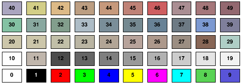
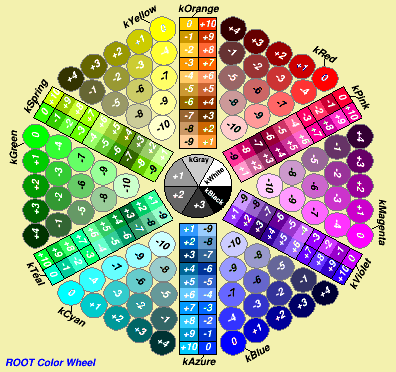
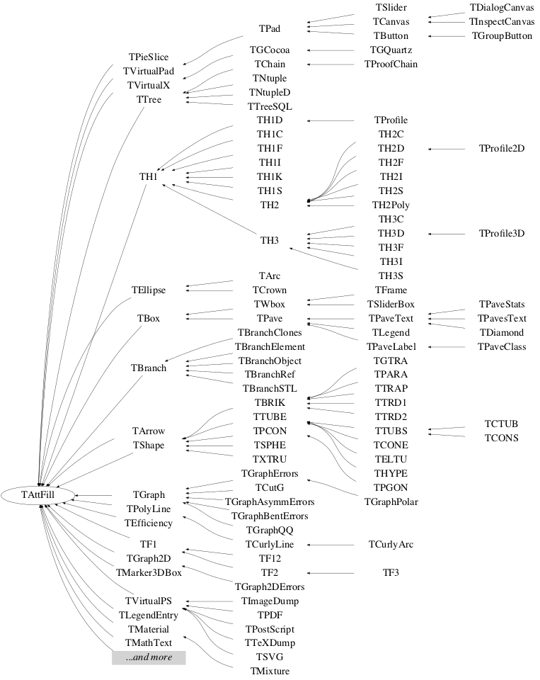

class TAttFill
Fill Area Attributes class
Fill Area attributes
Fill Area attributes are:Fill Area color
The fill area color is a color index (integer) pointing in the ROOT color table. The fill area color of any class inheriting from TAttFill can be changed using the method SetFillColor and retrieved using the method GetFillColor. The following table shows the first 50 default colors.

Color transparency
SetFillColorAlpha(), allows to set a transparent color. In the following example the fill color of the histogram histo is set to blue with a transparency of 35%. The color kBlue itself remains fully opaque.
histo->SetFillColorAlpha(kBlue, 0.35);
The transparency is available on all platforms when the flagOpenGL.CanvasPreferGL is set to 1 in $ROOTSYS/etc/system.rootrc, or on Mac with the Cocoa backend. On the file output it is visible with PDF, PNG, Gif, JPEG, SVG ... but not PostScript.
The ROOT Color Wheel.
The wheel contains the recommended 216 colors to be used in web applications. The colors in the Color Wheel are created by TColor::CreateColorWheel.Using this color set for your text, background or graphics will give your application a consistent appearance across different platforms and browsers.
Colors are grouped by hue, the aspect most important in human perception Touching color chips have the same hue, but with different brightness and vividness.
Colors of slightly different hues clash. If you intend to display colors of the same hue together, you should pick them from the same group.
Each color chip is identified by a mnemonic (eg kYellow) and a number. The keywords, kRed, kBlue, kYellow, kPink, etc are defined in the header file Rtypes.h that is included in all ROOT other header files. We strongly recommend to use these keywords in your code instead of hardcoded color numbers, eg:
myObject.SetFillColor(kRed); myObject.SetFillColor(kYellow-10); myLine.SetLineColor(kMagenta+2);


{
TColorWheel *w = new TColorWheel();
w->Draw();
return w->GetCanvas();
}Special case forcing black&white output.
If the current style fill area color is set to 0, then ROOT will force a black&white output for all objects with a fill area defined and independently of the object fill style.Fill Area style
The fill area style defines the pattern used to fill a polygon. The fill area style of any class inheriting from TAttFill can be changed using the method SetFillStyle and retrieved using the method GetFillStyle.Conventions for fill styles:
- 0 : hollow
- 1001 : Solid
- 3000+pattern_number (see below)
- For TPad only:
- 4000 :the window is transparent.
- 4000 to 4100 the window is 100% transparent to 100% opaque.
pattern_number = ijk (FillStyle = 3ijk)
i (1-9) : specify the space between each hatch
1 = 1/2mm 9 = 6mm
j (0-9) : specify angle between 0 and 90 degrees
0 = 0
1 = 10
2 = 20
3 = 30
4 = 45
5 = Not drawn
6 = 60
7 = 70
8 = 80
9 = 90
k (0-9) : specify angle between 90 and 180 degrees
0 = 180
1 = 170
2 = 160
3 = 150
4 = 135
5 = Not drawn
6 = 120
7 = 110
8 = 100
9 = 90
The following table shows the list of pattern styles.
The first table displays the 25 fixed patterns. They cannot be
customized unlike the hatches displayed in the second table which be
customized using:
- gStyle->SetHatchesSpacing() to define the spacing between hatches.
- gStyle->SetHatchesLineWidth() to define the hatches line width.
Function Members (Methods)
| TAttFill() | |
| TAttFill(const TAttFill&) | |
| TAttFill(Color_t fcolor, Style_t fstyle) | |
| virtual | ~TAttFill() |
| static TClass* | Class() |
| void | Copy(TAttFill& attfill) const |
| virtual Color_t | GetFillColor() const |
| virtual Style_t | GetFillStyle() const |
| virtual TClass* | IsA() const |
| virtual Bool_t | IsTransparent() const |
| virtual void | Modify() |
| TAttFill& | operator=(const TAttFill&) |
| virtual void | ResetAttFill(Option_t* option = "") |
| virtual void | SaveFillAttributes(ostream& out, const char* name, Int_t coldef = 1, Int_t stydef = 1001) |
| virtual void | SetFillAttributes()MENU |
| virtual void | SetFillColor(Color_t fcolor) |
| virtual void | SetFillColorAlpha(Color_t fcolor, Float_t falpha) |
| virtual void | SetFillStyle(Style_t fstyle) |
| virtual void | ShowMembers(TMemberInspector&) |
| virtual void | Streamer(TBuffer&) |
| void | StreamerNVirtual(TBuffer& ClassDef_StreamerNVirtual_b) |
Class Charts



Function documentation
AttFill normal constructor. color Fill Color style Fill Style
Save fill attributes as C++ statement(s) on output stream out
Set a transparent fill color. falpha defines the percentage of the color opacity from 0. (fully transparent) to 1. (fully opaque).